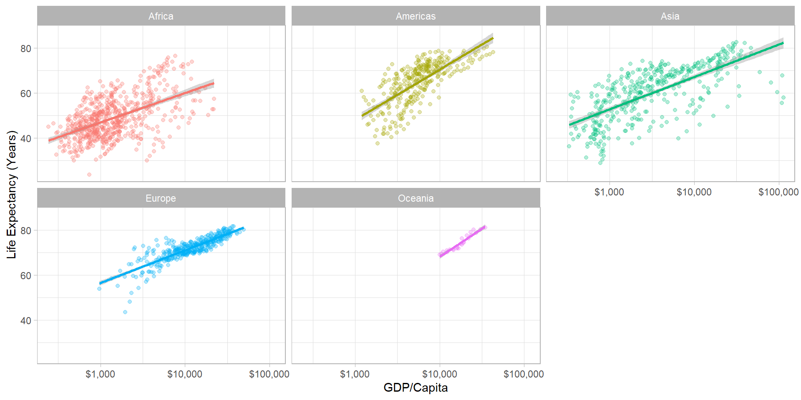
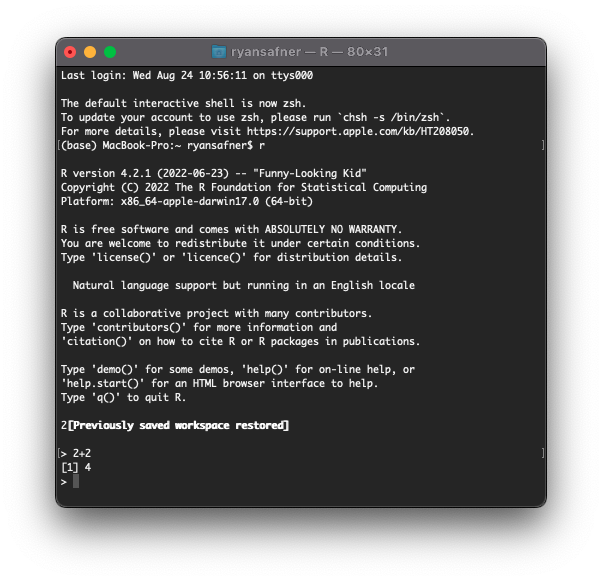
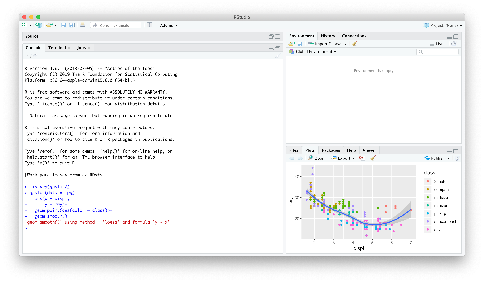
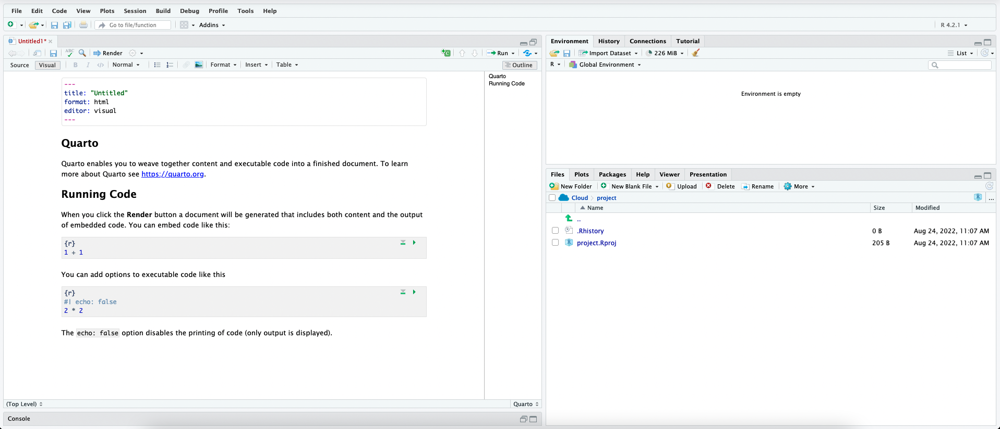
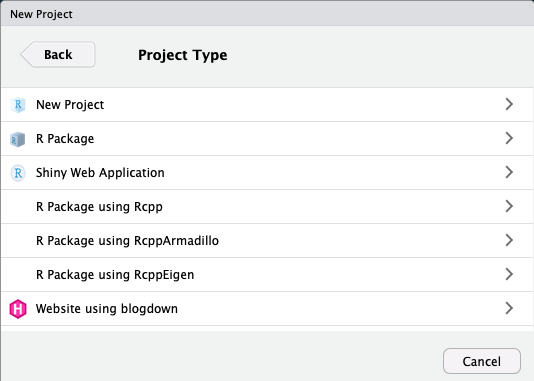
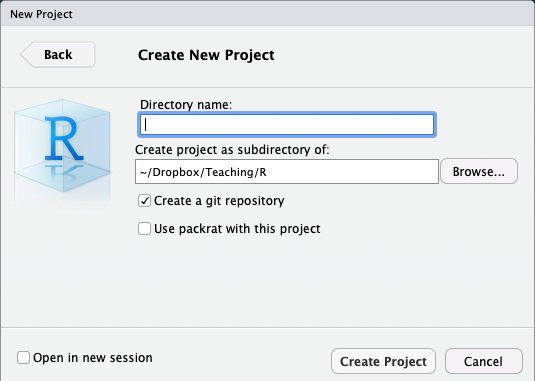
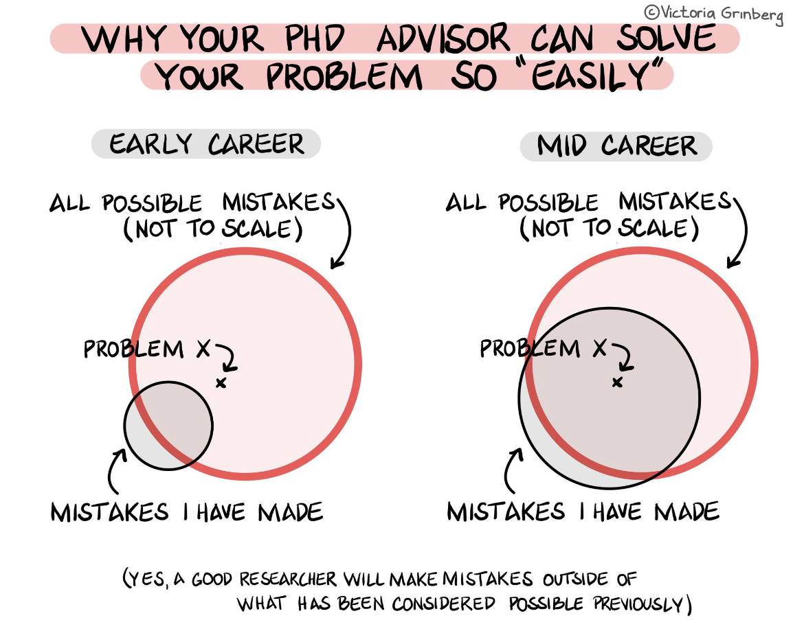
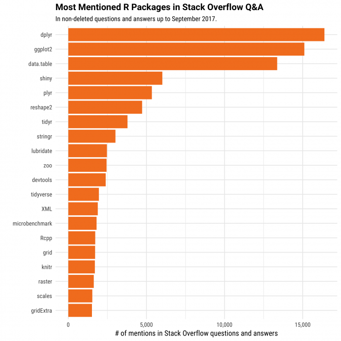

ggplot(data = gapminder,
aes(x = gdpPercap,
y = lifeExp,
color = continent))+
geom_point(alpha=0.3)+
geom_smooth(method = "lm")+
scale_x_log10(breaks=c(1000,10000, 100000),
label=scales::dollar)+
labs(x = "GDP/Capita",
y = "Life Expectancy (Years)")+
facet_wrap(~continent)+
guides(color = F)+
theme_light()Meet R
USAID’s KP Revenue Mobilization Activity
Dr. Zahid Asghar
Professor of Economics
Data Science
You go into data analysis with the tools you know, not the tools you need
The next 2-3 weeks are all about giving you the tools you need
- Admittedly, a bit before you know what you need them for
We will extend them as we learn specific models
R
Free and open source
A very large community
- Written by statisticians for statistics
- Most packages are written for
Rfirst
Can handle virtually any data format
Makes replication easy
Can integrate into documents (with
R markdown)R is a language so it can do everything
- A good stepping stone to learning other languages like Python

Excel (or Stata) Can’t Do This

Or This
Or This
Meet R and R Studio
R and R Studio
R is the programming language that executes commands
Could run this from your computer’s shell
- On Windows: Command prompt
- On Mac/Linux: Terminal

R and R Studio
- R Studio1 is an integrated development environment (IDE) that makes your coding life a lot easier
- Write code in scripts
- Execute individual commands & scripts
- Auto-complete, highlight syntax
- View data, objects, and plots
- Get help and documentation on commands and functions
- Integrate code into documents with
Quarto

R Studio — Four Panes
Ways to Use R Studio: Using the Console
Type individual commands into the console pane (bottom left)
Great for testing individual commands to see what happens
Not saved! Not reproducible! Not recommended!

Ways to Use R Studio: Writing a .R Script
Source pane is a text-editor
Make
.Rfiles: all input commands in a single scriptComment with
#Can run any or all of script at once
Can save, reproduce, and send to others!

Ways to Use R Studio: Quarto Documents
Getting to Know Your Computer
R assumes a default (often inconvenient) “working directory” on your computer
- The first place it looks to
openorsavefiles
- The first place it looks to
Find out where R this is with
getwd()Change it with
setwd(path/to/folder)1
Avoid this Hassle with R Projects
- A
R Projectis a way of systematically organizing yourRhistory, working directory, and related files in a single, self-contained directory - Can easily be sent to others who can reproduce your work easily
- Connects well with version control software like GitHub
- Can open multiple projects in multiple windows

Avoid this Hassle with R Projects
In almost all cases, you simply want a
New ProjectFor more advanced uses, your project can be an
R Packageor aShiny Web ApplicationIf you have other packages that create templates installed (as I do, in the previous image), they will also show up as options

Avoid this Hassle with R Projects
Enter a name for the project in the top field
- Also creates a folder on your computer with the name you enter into the field
Choose the location of the folder on your computer
Depending on if you have other packages or utilities installed (such as
git, see below!), there may be additional options, do not check them unless you know what you are doingBottom left checkbox allows you to open a new instance (window) of
Rjust for this project (and keep existing windows open)

An Intro to Coding
Learning…
You don’t “learn R”, you learn how to do things in R
In order to do learn this, you need to learn how to search for what you want to do
Learning…
My #rstats learning path:
1. Install R
2. Install RStudio
3. Google “How do I [THING I WANT TO DO] in R?”
Repeat step 3 ad infinitum.— Jesse Mostipak (@kierisi) August 18, 2017
A surprisingly large part of having expertise in a topic is not so much knowing everything about it but learning the language and sources well enough to be extremely efficient in google searches.
— Katie Mack (@AstroKatie) December 8, 2018
…and Sucking

Say Hello To My Little Friend

Say Hello to My Better Friend

R Is Helpful Too!
- Type
help(function_name)or?(function_name)to get documentation on a function

I’ve Failed More Times Than You
Tips for Writing Code
- Comment, comment, comment!
- The hashtag
#starts a comment, R will ignore everything on the rest of that line
- Save often!
- Write scripts that save the commands that did what you wanted (and comment them!)
- Better yet, use a version control system like Git (I may cover this later)
Style and Naming
Once we start writing longer blocks of code, it helps to have a consistent (and human-readable!) style
I follow this style guide (you are not required to)1
Naming objects and files will become important
- DO NOT USE SPACES! You’ve seen seen webpages intended to be called
my webpage in htmlturned intohttp://my%20webpage%20in%20html.html
- DO NOT USE SPACES! You’ve seen seen webpages intended to be called
Simple Commands
You’ll have to get used to the fact that you are coding in commands to execute
Start with the easiest: simple math operators and calculations:
Simple Commands
- We can start using more fancy commands
Packages and Libraries
- Since R is open source, users contribute packages
- Really it’s just users writing custom functions and saving them for others to use
- Load packages with
library()1- e.g.
library("ggplot2")
- e.g.
- If you don’t have a package, you must first
install.packages()2- e.g.
install.packages("ggplot2")
- e.g.

Objects & Functions
- R is an object-oriented programming language, meaning you will always be:
- creating
objects- assign values to an object with
=(or<-)1
- assign values to an object with
- running
functionsonobjects- syntax:
my_function(my_object)
- syntax:
More About Functions
Functions have arguments, the input(s)
Some functions may have multiple arguments
The argument of a function can be another function!
Types of R Objects
Numeric
Character
Logical
logicalobjects are boolean/binaryTRUEorFALSEindicators1Used a lot to evaluate conditionals:
>,<: greater than, less than>=,<=: greater than or equal to, less than or equal to==,!=: is equal to, is not equal to2&in&: is a member of the set of \((\in)\)&: “AND”|: “OR”
Factor
factorobjects contain categorical data - membership in mutually exclusive groupsLook like
characterstrings, behave more likelogicals, but with more than two options
[1] junior sophomore freshman senior junior senior senior
[8] junior junior sophomore
Levels: freshman sophomore junior senior- We’ll make much more extensive use of them later
[1] junior sophomore freshman senior junior senior senior
[8] junior junior sophomore
Levels: freshman < sophomore < junior < seniorData Structures
Vectors
Dataframes I
data.frameortibble: what we’ll always be using; think like a “spreadsheet”:- Each column is a vector (variable) of data all the same type
- Each row is an observation (pair of values for all variables)
# A tibble: 53,940 × 10
carat cut color clarity depth table price x y z
<dbl> <ord> <ord> <ord> <dbl> <dbl> <int> <dbl> <dbl> <dbl>
1 0.23 Ideal E SI2 61.5 55 326 3.95 3.98 2.43
2 0.21 Premium E SI1 59.8 61 326 3.89 3.84 2.31
3 0.23 Good E VS1 56.9 65 327 4.05 4.07 2.31
4 0.29 Premium I VS2 62.4 58 334 4.2 4.23 2.63
5 0.31 Good J SI2 63.3 58 335 4.34 4.35 2.75
6 0.24 Very Good J VVS2 62.8 57 336 3.94 3.96 2.48
7 0.24 Very Good I VVS1 62.3 57 336 3.95 3.98 2.47
8 0.26 Very Good H SI1 61.9 55 337 4.07 4.11 2.53
9 0.22 Fair E VS2 65.1 61 337 3.87 3.78 2.49
10 0.23 Very Good H VS1 59.4 61 338 4 4.05 2.39
# … with 53,930 more rows
# ℹ Use `print(n = ...)` to see more rowsDataframes II
Dataframes are really just combinations of (column) vectors
You can make data frames by combinining named vectors with
data.frame()or creating each column/vector in each argument
# make two vectors
fruits = c("apple","orange","pear","kiwi","pineapple")
numbers = c(3.3,2.0,6.1,7.5,4.2)
# combine into dataframe
df = data.frame(fruits,numbers)
# do it all in one step (note the = instead of <-)
df = data.frame(fruits=c("apple","orange","pear","kiwi","pineapple"),
numbers=c(3.3,2.0,6.1,7.5,4.2))
# look at it
df fruits numbers
1 apple 3.3
2 orange 2.0
3 pear 6.1
4 kiwi 7.5
5 pineapple 4.2Working with Objects
Objects: Storing, Viewing, and Overwriting
- We want to store things in objects to run functions on them later
- Recall, any object is created with the assignment operator
=or<-
- R will not give any output after an assignment
Objects: Storing, Viewing, and Overwriting
- View an object (and list its contents) by typing its name
Objects: Checking and Changing Classes
- Check what type of object something is with
class()
Objects: Checking and Changing Classes
- Convert objects from one class to another with
as.object_class()- Pay attention: you can’t convert non-numbers to
numeric, etc!
- Pay attention: you can’t convert non-numbers to
Objects: Different Classes and Coercion I
- Different types of objects have different rules about mixing classes
- Vectors can not contain different types of data
- Different types of data will be “coerced” into the lowest-common denominator type of object
Objects: Different Classes and Coercion II
- Data frames can have columns with different types of data, so long as all the elements in each column are the same class1
More on Dataframes I
- Learn more about a data frame with the
str()command to view its structure
More on Dataframes II
- Take a look at the first 5 (or
n) rows withhead()
More on Dataframes III
Get summary statistics1 by column (variable) with summary()
More on Dataframes IV
- Note, once you save an object, it shows up in the Environment Pane in the upper right window
- Click the blue arrow button in front of the object for some more information
More on Dataframes V
data.frameobjects can be viewed in their own panel by clicking on the name of the object in the environment pane- Note you cannot edit anything in this pane, it is for viewing only
Functions Again I
- Functions in R are vectorized, meaning running a function on a vector applies it to each element
Functions Again II
- But often we want to run functions on vectors that aggregate to a result (e.g. a statistic):
Some Common Errors
- If you make a coding error (e.g. forget to close a parenthesis), R might show a
+sign waiting for you to finish the command
- Either finish the command– e.g. add
)–or hitEscto cancel

USAID —KPRA